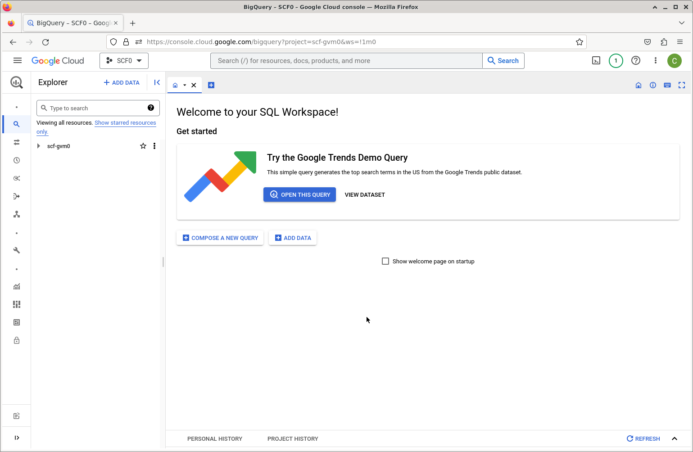
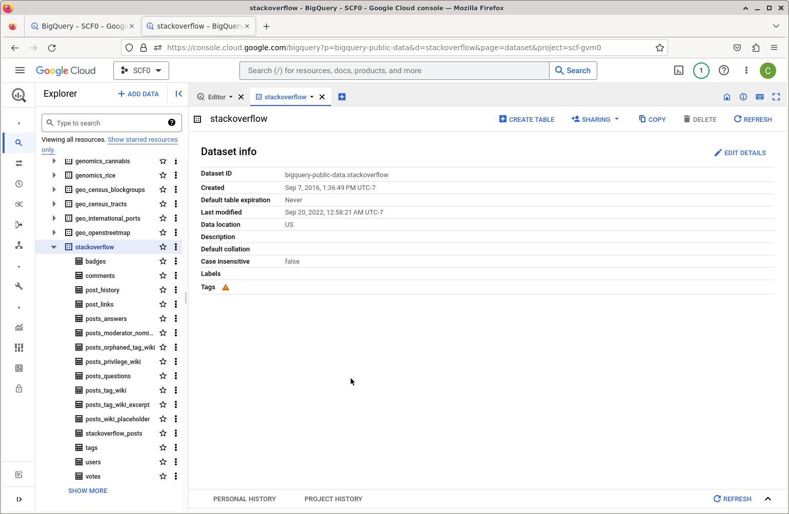
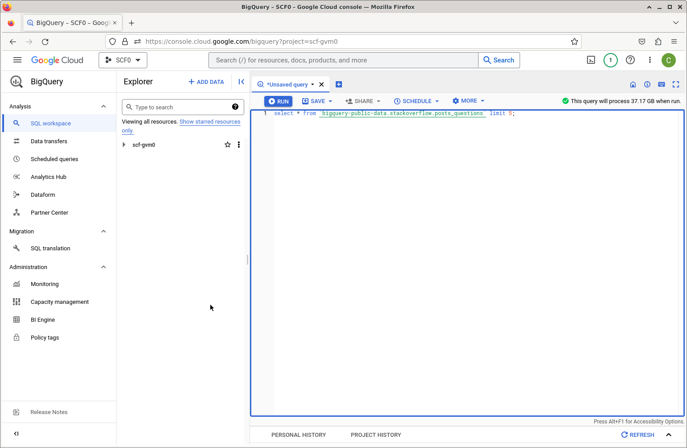
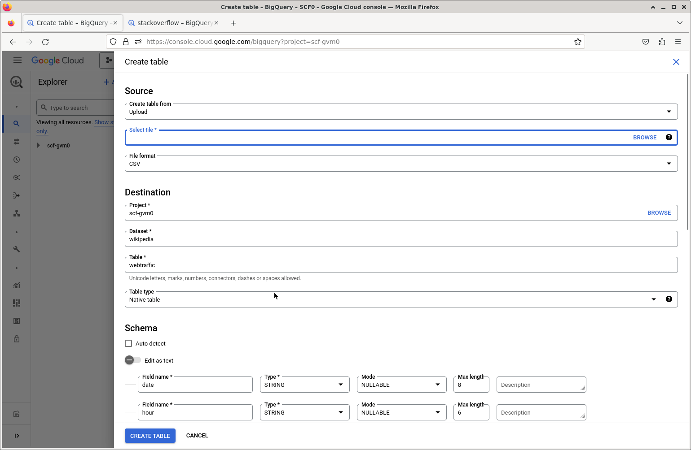

select * from `bigquery-public-data.stackoverflow.posts_questions` limit 5;Data Warehouses
1 Overview
Data warehouses such as Google BigQuery and Amazon RedShift allow you to create a data repository in which the data are structured like in a database (tables, fields, etc.), stored in the cloud, and queried efficiently (and in parallel) using the cloud provider’s infrastructure. Storage is by column, which allows for efficient queries when doing queries operating on large portions of tables.
BigQuery has some nice advantages over RedShift for one-off analyses (as opposed to regular, repeated operations). In particular, it requires less configuration/administration. BigQuery is ‘serverless’. Instead of you having to set up virtual machines to do the queries, BigQuery automatically sets up the computational resources for your query, scaled as appropriate for the size of the query.
Some features of BigQuery include:
- You can manage access to your datasets for different GCP users.
- You can query publicly available datasets.
- You can query “external tables” to access data not in a BigQuery dataset.
The instructions here were prepared in 2023 and the interface may have changed since then.
2 Running queries
Let’s first demonstrate running an SQL query in BigQuery. We’ll use a publicly available dataset. You can process your first one terabyte of data per month for free (that sounds like a lot, but queries can add up quickly when datasets are gigatyes in size or larger).
2.1 Using the BigQuery browser-based interface
These next instructions assume you have a Google Cloud Platform account with billing set up (e.g., using a credit card). To use the BigQuery Sandbox, see below.
Navigate to cloud.google.com and login (or create if needed) your Google Cloud Platform account (which will be associated with your Google account and its email address). Then go to the BiqQuery website and click Enable (if you haven’t enabled it previously for your account).
Now we can start working with BigQuery. The demo here follows these instructions.

To use a public dataset, we’ll choose Add Data and scroll down to Public Datasets. Search for “Stack Overflow”. Click on View Dataset. You’ll be able to see that the name of the dataset is bigquery-public-data.stackoverflow. This dataset has similar data to the Stack Overflow database used elsewhere in this tutorial, but the schema differs somewhat.
In the Explorer pane you can search for “Stack Overflow” and be able to view the tables, and then select tables to see the fields.

Explorer pane highlight the public stackoverflow dataset.Now we can go to the Editor pane or select `Compose a New Query’ and enter an SQL query.

Editor pane.Note that BigQuery will preview how much data will be processed (see the upper right). Remember that you can process 1 TB for free each month.
This example query would process 37 GB. Maybe more of our free quota than we want to use at the moment.
This will only process 2.5 MB, so let’s run this:
select * from `bigquery-public-data.stackoverflow.tags` order by count desc limit 20;The result (which you can see in the next section run from R) indicates that javascript, python, java, and c# are the most popular tags.
You can save the results in various ways (to a local file, to Google Drive, as a BigQuery table, etc.
2.1.1 Using the free BigQuery Sandbox
You can use the Sandbox to avoid having to set up billing for your GCP account. The Sandbox has the same limits as BigQuery’s free tier, in particular 1 TB of processed query data each month.
Go to BigQuery, and login with your Google account. Set up a new project and then go to BigQuery and try it out (e.g., running the query above on the StackOverflow data).
2.2 Running queries from R or Python
2.2.1 Using R
We can use the bigrquery R package to interact with BigQuery from R (e.g., running on a laptop).
myproject <- "scf-gvm0"
user <- "paciorek@berkeley.edu"
library(bigrquery)
library(DBI)The following will prompt for authentication to your Google account in a browser and save the authentication information as a ‘token’ associated with the email address.
In principle, you shouldn’t have to do this explicitly, but rather the first time you try to interact with a BigQuery dataset, bigrquery should prompt you to authenticate, or if you’ve previously authenticated, it will reload a saved token. But I’ve had some trouble getting this to work without explicitly running the next steps.
token <- gargle::credentials_user_oauth2(scopes = "https://www.googleapis.com/auth/bigquery",
email = user)
bigrquery::bq_auth(token = token)Now let’s connect to the public dataset and check the schema. To be able to run queries, we need to be able to provide a GCP project that has billing set up via the billing argument. It’s possible that the SQL below would run if billing is set to be the name of a project without billing set up (i.e., using the BigQuery Sandbox), but I haven’t checked that.
drv <- bigquery()
db <- dbConnect(drv,
project = "bigquery-public-data",
dataset = "stackoverflow",
billing = myproject
)
dbListTables(db) [1] "badges" "comments"
[3] "post_history" "post_links"
[5] "posts_answers" "posts_moderator_nomination"
[7] "posts_orphaned_tag_wiki" "posts_privilege_wiki"
[9] "posts_questions" "posts_tag_wiki"
[11] "posts_tag_wiki_excerpt" "posts_wiki_placeholder"
[13] "stackoverflow_posts" "tags"
[15] "users" "votes" dbListFields(db, 'posts_questions') [1] "id" "title"
[3] "body" "accepted_answer_id"
[5] "answer_count" "comment_count"
[7] "community_owned_date" "creation_date"
[9] "favorite_count" "last_activity_date"
[11] "last_edit_date" "last_editor_display_name"
[13] "last_editor_user_id" "owner_display_name"
[15] "owner_user_id" "parent_id"
[17] "post_type_id" "score"
[19] "tags" "view_count" Now let’s run the simple query we tried before.
sql <- "select * from tags order by count desc limit 20"
dbGetQuery(db, sql)# A tibble: 20 × 5
id tag_name count excerpt_post_id wiki_post_id
<int> <chr> <int> <int> <int>
1 3 javascript 2426650 3624960 3607052
2 16 python 2026741 3624965 3607014
3 17 java 1866104 3624966 3607018
4 9 c# 1559412 3624962 3607007
5 5 php 1445747 3624936 3607050
6 1386 android 1386459 3625001 3607484
7 2 html 1146245 3673183 3673182
8 820 jquery 1029561 3625262 3607053
9 10 c++ 776837 3624963 3606997
10 4 css 771867 3644670 3644669
11 58338 ios 674982 4536664 4536663
12 21 mysql 651413 3624969 3607033
13 22 sql 643145 3625226 3607304
14 4452 r 464242 3625322 3607736
15 46426 node.js 442811 4238969 4238968
16 92497 reactjs 415837 16880335 16880334
17 114 arrays 398827 4969094 4969093
18 8 c 385511 3624961 3607013
19 96 asp.net 370124 3625232 3607037
20 1508 json 346406 4889848 48898472.2.2 Using Python
We can use the Google BigQuery Python client (package) provided by Google. (We’ll also install the db-dtypes package so that we convert the result of our query into a Pandas data frame.)
pip install google-cloud-bigquery db-dtypesTo authenticate, you’ll need to use the gcloud command line interface. After installing that, we run the authentication command.
gcloud auth application-default loginThis will bring up a browser window and you can authenticate with your Google account. It will save your credentials to a file in your home directory, e.g., to ~/.config/gcloud/application_default_credentials.json. These credentials will then be used by Google Cloud clients such as the BigQuery client.
from google.cloud import bigquery
import db_dtypes # needed for `to_dataframe()`
myproject <- "some_project"
db = bigquery.Client(project = myproject)
sql = "select * from bigquery-public-data.stackoverflow.tags order by count desc limit 20"
query_job = db.query(sql) # API request
rows = query_job.result() # Waits for query to finish
mydf = rows.to_dataframe()
mydfThe results (not shown) are the same as when done from R.
3 Getting data into BigQuery
Next, let’s demonstrate setting up a BigQuery data warehouse, using the Wikipedia data (used in the database management demos) as an example. Recall that we have data to populate a single table from multiple space-delimited flat text files, all of them in exactly the same format in terms of columns.
3.1 Loading a local file
We can load from a local file on our computer using Add Data, or we can load from files already present in Google Cloud Storage.
First we’ll need to set IAM permissions on our account to allow the account to create and update tables.
To upload from a local file, select the Add Data button and choose the file. There is no ‘space-separated’ file format, so we’ll choose CSV and then in the advanced options, I need to specify that the delimiter is a space using a “custom” field delimiter. You can choose to create a new dataset. Since the files don’t have column names, I’ll choose to specify the schema (the field names and types) in the Schema section of the BigQuery form by clicking on the ‘+’ symbol to add each field, specifically by entering this information: {date: string, maxlength = 8, hour: string: maxlength = 6, site: string, page: string, count: integer, size: numeric}.

Editor pane.I’ll name the new BigQuery dataset wiki_test (this is equivalent to the name of a database in a standard DBMS).
As was the case in the data management demos, we need to strip out double quote (“) symbols as BigQuery tries to interpret these as beginning and ending fields.
In the Add Data form, it looks like we can only add a single file at a time, so for this test, I’ll just add one file.
You can then test things worked by trying to query the new table in the new dataset from R as done previously with the public Stack Overflow dataset.
db<- dbConnect(drv,
project = myproject,
dataset = "wiki_test",
billing = myproject
)dbListTables(db)
dbListFields(db, 'webtraffic')
sql <- "select * from webtraffic limit 5"
dbGetQuery(db, sql)If it works you should see results like this:
## [1] "webtraffic"
## [1] "date" "hour" "site" "page" "count" "size"
## # A tibble: 5 × 6
## date hour site page count size
## <chr> <chr> <chr> <chr> <int> <dbl>
## 1 20081101 000001 af Halloween 12 94174
## 2 20081101 000001 af Spesiaal:Onlangse_wysigings 25 360372
## 3 20081101 000001 af Spesiaal:Search 50 52332
## 4 20081101 000001 af Tempelhof-lughawe 26 115063
## 5 20081101 000001 af Tuisblad 33 5148293.2 Loading from Google Cloud Storage
Now let’s load multiple files all at once from Google Cloud Storage (GCS).
First we’ll take 10 of the files of the cleaned (no double quotes) Wikipedia data and put them in GCS. Through the GCS web interface, I’ll create a bucket named wikipedia-cleaned-data and upload the files.
Now select Add Data in the BigQuery interface. We’ll select the source as Google Cloud Storage, the file format as CSV (with the custom separator of a space character) and use a “URI pattern” to select all 10 of the files: wikipedia-cleaned-data/part-*. We’ll name this dataset wikipedia.
We can now run the same query as above on the new (larger) dataset:
db<- dbConnect(drv,
project = myproject,
dataset = "wikipedia",
billing = myproject
)dbListTables(db)
dbListFields(db, 'webtraffic')
sql <- "select * from webtraffic limit 5"
dbGetQuery(db, sql)Again, if it worked, you should se results like:
## [1] "webtraffic"
## [1] "date" "hour" "site" "page" "count" "size"
## # A tibble: 5 × 6
## date hour site page count size
## <chr> <chr> <chr> <chr> <int> <dbl>
## 1 20081101 000001 fr Psychose 15 295730
## 2 20081101 000001 fr Skyrock_Blog 10 192848
## 3 20081101 000001 fr Tunisie 36 3736262
## 4 20081101 000001 fr Ulc%C3%A8re 10 60423
## 5 20081101 000001 fr X_Japan 11 2586343.3 Permissions
I did this using my Google Cloud account, which is an owner of the GCP account and so has various BigQuery permissions already set to allow various actions, including creating or modifying BigQuery datasets.
If you (as recommended) are using an IAM account, you are likely to need to set some permissions for the account to create or modify BigQuery datasets. In particular, as discussed here you need the following IAM permissions set:
- bigquery.tables.create
- bigquery.tables.updateData
- bigquery.tables.update
- bigquery.jobs.create
You can set these permissions by adding one of various IAM roles (e.g., roles/bigquery.dataEditor, roles/bigquery.dataOwner, roles/bigquery.admin, bigquery.user, or bigquery.jobUser).